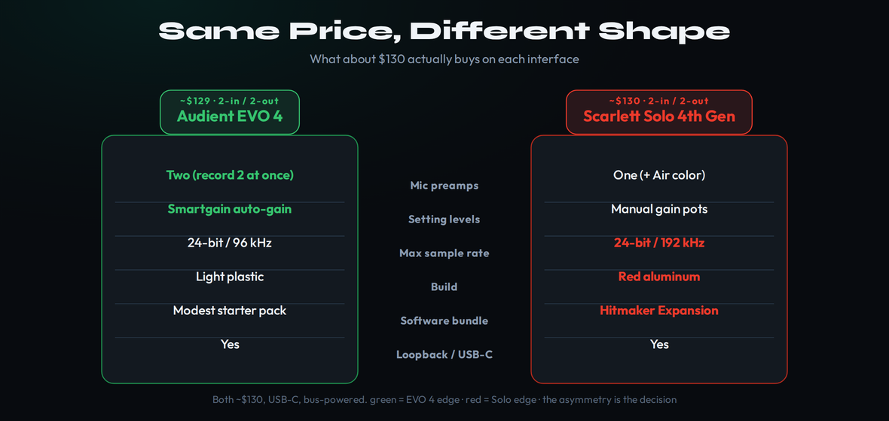
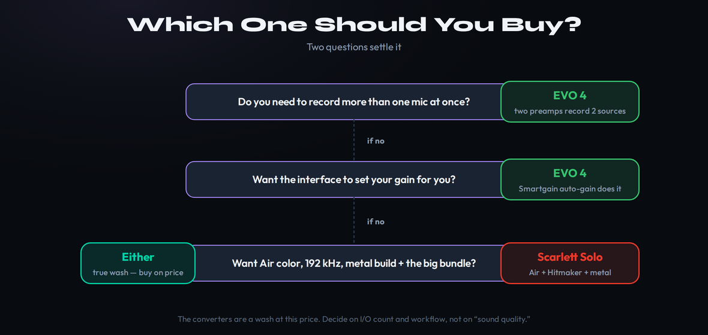
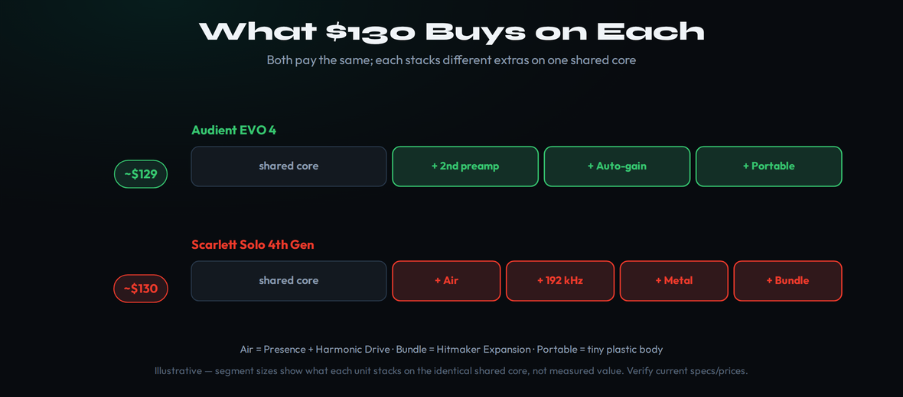

The short answer
The EVO 4 and the Scarlett Solo cost about the same and aren’t the same shape — that asymmetry is the whole decision. The Audient EVO 4 gives you two mic preamps (record two sources at once) and Smartgain auto level-setting in a tiny plastic body. The Focusrite Scarlett Solo gives you one mic preamp with Focusrite’s Air character, 24-bit/192 kHz, a metal chassis and a much bigger software bundle. So skip “which is better” and answer two questions: do you need to record more than one mic at a time, and do you want the box to set your gain for you? Yes to either → EVO 4. A solo singer-songwriter who wants Air, the bundle and the build → Scarlett Solo. The converters are a wash at this price, so decide on inputs and workflow, not on “sound quality.”
Stop Asking Which Is Better. Ask Which Shape You Need.
Search “EVO 4 vs Scarlett Solo” and you’ll get the same shrug five times: both are great beginner interfaces, both sound clean, you can’t go wrong. All true, and all useless, because it never names the one thing that actually separates them. These two boxes sit at the same price — roughly $130 each — and a beginner standing in front of both naturally assumes the question is “which is the better interface.” It isn’t. They aren’t two versions of the same thing competing on quality; they’re two different shapes sold for the same money, and the right one for you depends entirely on what you plan to plug in.
Here is the framing nobody puts up front. An audio interface at this tier does one core job — turn a mic or instrument into clean digital audio your computer can record — and at $130 both of these do that job to a standard that was unthinkable a decade ago. Where they split is the kind of recording rig they build around that core. The EVO 4 is built like a miniature two-channel console: two identical preamps, a button that sets your levels for you, and a body small enough to forget in a backpack. The Scarlett Solo is built like a songwriter’s single-channel front end: one polished preamp with a tone-shaping “Air” switch, a tank of a metal chassis, and a software pile big enough to fill a starter studio. Same money, opposite priorities.
It helps to be honest about who actually reads a comparison like this: someone who has narrowed the field to two well-reviewed boxes and is paralyzed by how similar they look. That paralysis is the symptom of comparing the wrong things. Spec sheets invite you to tally features — sample rates, dynamic-range numbers, preamp gain figures — and at this tier those numbers are so close that tallying them tells you nothing and makes you anxious. The way out is to stop counting features and start counting your sources, your habits and your two-year plan. Once you frame it that way, the two boxes stop looking like near-identical rivals and start looking like what they are: two different tools that happen to share a shelf and a price.
That is why a feature tour is the wrong tool and a decision tree is the right one. On everything they share — USB-C, bus power, a Hi-Z instrument input, loopback for streaming, clean 24-bit conversion — they are a coin flip. On the handful of things they don’t share, the differences are stark and they line up cleanly on opposite sides. This guide is built to surface those few real differences, weigh them honestly, and hand you a verdict that splits by what you record rather than pretending one box wins outright. We’ll start with the two differences that decide almost every case.
The Two Differences That Decide It
Strip away the spec sheets and there are really only two questions that move this decision, and both belong to the EVO 4. The first is input count. The EVO 4 has two mic preamps; the Scarlett Solo has one. The second is gain. The EVO 4 sets your recording level automatically with Smartgain; the Solo asks you to set it by hand. Everything else — Air, sample rate, build, bundle — is the Scarlett’s answer, and it’s a real answer, but it only matters once those first two questions come back “no.”
This is worth saying plainly because the marketing obscures it. Both interfaces are advertised as “2-in/2-out,” which makes them sound identical on I/O. They aren’t. The Solo’s two inputs are one XLR mic input and one instrument input — you can record a mic and a guitar at the same time, but you cannot record two microphones at the same time, because there’s only one mic preamp. The EVO 4’s two inputs are two full mic/line preamps, so two microphones, or a mic and a vocalist, or an interviewer and a guest, all land on separate tracks at once. If anything you record ever involves two people or two mics in a room, that single fact ends the comparison before it starts.

The diagram above is the entire article in one picture: a short list of things the two boxes do identically, and a shorter list of things only one of them does. Read it and you’ll notice the differences don’t pile up on one side — they split. The EVO 4 owns inputs and auto-gain; the Solo owns tone, sample rate, build and bundle. Neither list is longer or more impressive than the other. They’re just aimed at different people. The rest of this guide walks each difference in turn so you can tell which list is yours.
Why the Second Preamp Is the Whole Argument
The EVO 4’s decisive advantage is the one most beginners underestimate until the day it bites them: it can record two microphones simultaneously. Two transparent Audient EVO preamps, each with around 58 dB of clean gain and its own combo XLR/jack input, mean you can track a vocalist and an acoustic guitar with two mics, capture a two-person podcast with each voice on its own channel, mic a guitar amp in stereo, or record an interview without anyone sharing a microphone. The Scarlett Solo, with its single mic preamp, simply cannot do any of that — one voice, one mic, one channel at a time.
Why does this matter so much for a first interface? Because the most common reason people outgrow their first interface is discovering they needed a second input. You buy a Solo to record vocals, then a friend wants to lay down a harmony with you, or you start a podcast, or you want to mic your amp properly, and suddenly the box you own can’t do the thing you need — so you buy another interface. The EVO 4 quietly removes that ceiling for the same money. It is, on I/O, much closer to a Scarlett 2i2 than to the Solo it’s priced against, which is exactly why it can feel like more interface per dollar: you’re getting two-channel capability at one-channel money.
It’s worth picturing the concrete moments where this lands, because “two preamps” is abstract until it isn’t. You and a friend want to record a song together, both singing into separate mics so you can balance them later: EVO 4 yes, Solo no. You start a two-person podcast and each host needs their own clean channel for editing: EVO 4 yes, Solo no. You want to mic an acoustic guitar with one mic and sing into another at the same time, capturing a live, breathing take instead of overdubbing: EVO 4 yes, Solo no. You want to stereo-mic a piano, a drum kit or a room with a matched pair: EVO 4 yes, Solo no. None of these are exotic; they’re the ordinary next steps a growing recordist takes, and the single-preamp Solo simply cannot follow you there.
The honest counterpoint: if you genuinely only ever record one source at a time — you’re a solo singer-songwriter, or you only DI your bass, or you record a podcast monologue — then the second preamp is capability you’ll never touch, and paying attention to it would be paying for empty road. That’s the case the Scarlett is built for, and it’s a real and common case. But it’s a narrower case than most beginners think they fall into, and the cost of guessing wrong is asymmetric: an unused second preamp costs you nothing, while a missing one costs you a whole new purchase.
Smartgain vs Setting Levels by Hand
The second EVO 4 advantage is the one that flatters beginners directly: it sets your gain for you. Press the Smartgain button, sing or play for about ten seconds, and the EVO 4 analyzes your loudest moments and dials the preamp to a safe target level — roughly −12 dBFS — with no clipping and no guesswork. It will even set two channels at once. For someone who doesn’t yet have a feel for gain staging, this removes the single most common beginner mistake: recording too hot and ruining a take with digital distortion, or too quiet and burying it in noise.
Here is the part the brief flagged as load-bearing, and it’s worth being precise about because the marketing muddies it. The Scarlett Solo 4th Gen does not have an auto-gain feature. Focusrite’s slick Auto Gain and Clip Safe technologies are real and excellent — but they live on the 2i2 and 4i4, which use newer digitally-controlled preamps. The Solo keeps the previous-generation preamp design with manual analog gain knobs. It gives you Focusrite’s Gain Halos — rings that glow green, amber and red so you can eyeball your level — but you still turn the knob yourself and you still have to know what a good level looks like. So “the EVO 4 sets your gain, the Solo doesn’t” is a genuine, current differentiator at this price, not a marketing nuance.
It also pays to understand what Smartgain is and isn’t, so you don’t over- or under-value it. It is not a compressor and it doesn’t change your sound; it simply listens to a short performance, finds your peaks, and parks the preamp at a level that leaves safe headroom — the same judgment an engineer makes by ear, automated. You can always nudge it afterward, and you’ll still want to learn proper gain staging eventually, because Smartgain sets the input and the rest of your signal chain is still yours to manage. What it buys a beginner is the removal of the scariest, most take-ruining variable on day one, so you can focus on the performance instead of watching meters. That head start has real value even though it’s a skill you’ll outgrow needing.
How much weight should you give it? If you’re brand new and the technical side intimidates you, real weight: Smartgain is the difference between a clean first take and a frustrating evening. If you already understand levels, or you actively prefer the control of a physical gain pot, much less — setting gain by hand is a ten-second habit once it’s learned, and plenty of engineers prefer it. The point is simply that this is a true capability gap, and a beginner who hates fiddling with levels should weigh it heavily toward the EVO 4.
What the Scarlett Gives Back: Air, 192 kHz, Metal and the Bundle
If the EVO 4 owned every axis this would be a boring article. It doesn’t. The Scarlett Solo answers with four things of its own, and for the right buyer they outweigh a second preamp entirely. The headline is Air. Focusrite’s re-engineered Air mode is a tone shaper baked into the preamp, with two flavors: an analog Presence mode that lifts the top end for clarity, modeled on Focusrite’s classic ISA console sound, and a DSP-based Harmonic Drive mode that adds a touch of console-style warmth and weight. On a lead vocal or an acoustic guitar it can take a flat capture and push it forward in a mix — a genuinely useful character the transparent EVO 4 simply doesn’t offer. The EVO’s preamps are deliberately clean and uncolored; if you want flavor on the way in, that’s the Scarlett’s territory.
The other three are quieter but real. The Solo records at up to 24-bit/192 kHz versus the EVO 4’s 96 kHz ceiling — largely academic for home recording, where 96 kHz is already overkill, but it exists. Its chassis is a one-piece red aluminum shell with Neutrik connectors, where the EVO 4 is light plastic; if your interface lives in a gig bag and gets knocked around, that build difference is something you’ll feel. And the software bundle is lopsided in the Scarlett’s favor: Focusrite’s Hitmaker Expansion stacks Ableton Live Lite and a Pro Tools subscription on top of name-brand plugins — Antares Auto-Tune Access, Celemony Melodyne Essential, Native Instruments’ Massive, XLN Addictive Drums and Keys, Focusrite’s own Red channel-strip plugins, plus Splice and LANDR trials — a meaningful pile of tools for a beginner with no plugins yet. The EVO 4 ships a respectable starter bundle, but it doesn’t reach that far. For a producer starting from an empty plugin folder, the Scarlett’s bundle alone can be worth real money.
The bundle deserves one more honest word, because it’s the Scarlett advantage most likely to be undervalued by someone who already owns plugins and overvalued by marketing. If you arrive with a full plugin folder, the Hitmaker bundle is a nice extra you’ll mostly ignore. But if your interface is genuinely your first piece of gear and your DAW is empty, that bundle is a working starter studio: a real pitch-correction tool, a respected tuner-grade editor, a flagship synth, drum and key instruments, and a channel strip’s worth of mixing plugins — tools you’d otherwise spend a few hundred dollars assembling. For that buyer, the software can quietly be worth as much as the interface, and it tilts an already close decision toward the Solo. The EVO 4’s bundle is useful but modest by comparison, and Audient has never tried to win this particular battle.
The Thing That Doesn’t Decide It: Raw Sound
Beginners agonize over “which one sounds better,” and at this price that’s the wrong axis to agonize over. Both interfaces use modern, transparent converters — the EVO 4 with around 113 dB of dynamic range, the Solo with RedNet-derived converters Focusrite rates at 120 dB — and in normal home-recording use you will not hear a meaningful quality difference between them, or between either of them and a MOTU M-series or comparable rival. Reviewers who measure these things land in the same place: at the $100–130 tier, the preamps and converters are close enough that no one is a loser. Your microphone and your room will color your sound a hundred times more than the choice between these two boxes ever will.
The one nuance worth keeping: “transparent” and “has Air” are different goals, and that’s a character choice, not a quality one. The EVO 4 aims to capture exactly what the mic hears, which is what you want if you intend to shape the tone later in the box. The Scarlett’s Air gives you the option of a flattering lift on the way in, which some singers and guitarists love and some engineers prefer to add later with a plugin. Neither approach is “better” recording — they’re different starting points. So when you read “the Scarlett sounds better,” translate it to “the Scarlett can add character the EVO 4 leaves to you,” and decide whether you want that character baked in or kept separate. That’s a taste question, and it does not override the input-count question.
One practical consequence falls out of all this: if two interfaces capture essentially the same sound, then the money you might have spent chasing a phantom “sonic upgrade” between them is better spent elsewhere in the chain. A better microphone, a pop filter, some basic room treatment, or simply learning mic placement will transform your recordings far more than swapping one $130 interface for another would. Hold that thought while you decide — it’s a reminder that the real choice here is about workflow and inputs, and that whichever box you pick, your next dollar is better aimed at the parts of the chain that actually color the sound — a theme we run through in our guide to the best budget studio gear of 2026.
Living With Each: Controls, Monitoring and the Daily Grind
Specs decide the headline; the controls decide whether you enjoy using the thing every day, and here the two diverge in personality. The EVO 4 is built around a single large encoder and a row of touch buttons: you tap a button to select what the knob controls — input one, input two, headphones, monitors — then turn the one knob. It’s elegant and uncluttered, and once it clicks it’s fast, but it is modal: there’s no dedicated physical control staring back at you for each function, and some people never warm to setting two different gains through one shared knob. The Scarlett Solo takes the opposite approach with dedicated, always-there controls: a gain knob per preamp, a big monitor level dial, a separate headphone dial. Nothing is hidden behind a mode, which many recordists find more reassuring, especially when adjusting on the fly mid-take.
Monitoring is close but not identical. Both give you near-zero-latency direct monitoring so you can hear yourself without the round-trip delay of the computer, both are bus-powered over USB-C so there’s no wall wart to carry, and both supply switchable 48V phantom power for condenser mics. The EVO 4 adds a genuinely handy touch — plug headphones in and it auto-mutes the speakers, so you don’t blast your monitors by accident — and its monitor-mix and pan controls live in software. The Solo keeps independent hardware dials for headphones and monitors, which is the simpler mental model when you just want to turn one down. Neither has a latency problem worth worrying about at this tier; both are perfectly usable for tracking while monitoring through the box.
Then there’s the software layer, which matters more than beginners expect because it’s where loopback, routing and (on the EVO) the monitor mixer actually live. Audient’s EVO companion app handles the loopback mixer and routing; it works, though some users have hit Mac driver quirks with loopback over the years, so if streaming is your core use, test it early. Focusrite Control 2 is the more polished, more mature control surface, and the 4th-Gen Scarletts add remote control from a phone or tablet app — adjust levels and monitor mixes from across the room while you’re at the mic. For a one-person recording setup, that remote control is a quietly excellent feature the EVO 4 doesn’t match. None of this overturns the input-count verdict, but it’s the texture of living with each box, and if you lean toward the Solo’s single-source workflow, its controls and control app reinforce that choice.
The Verdict: A Near-Tie That Splits by Use-Case
Score these two honestly and they finish a couple of tenths apart — which is exactly what you’d expect from two well-made boxes at the same price aimed at different buyers. The table below scores them for the modal beginner who searches this comparison: someone who might record two sources, who’d benefit from auto-gain, and who’s weighing features-per-dollar. For that reader the EVO 4 edges it overall, 9.0 to 8.8. Flip the framing to a pure solo vocalist who wants Air and the bundle, and the pick flips to the Solo — the scores below don’t change, but the axes that matter to you do.
| Spec | Audient EVO 4 | Scarlett Solo 4th Gen |
|---|---|---|
| Mic preamps | Two (EVO, ~58 dB, transparent) | One (Scarlett, +57 dB) + Air |
| Inputs | 2× XLR/jack combo + 1× Hi-Z instrument | 1× XLR mic + 1× Hi-Z instrument |
| Record two mics at once | Yes | No (single mic pre) |
| Auto level-setting | Smartgain (automatic) | Manual gain pots (no Auto Gain) |
| Preamp character | Clean / transparent | Air: Presence + Harmonic Drive |
| Max sample rate | 24-bit / 96 kHz | 24-bit / 192 kHz |
| Dynamic range | ~113 dB | ~120 dB (RedNet-derived) |
| Loopback | Yes | Yes |
| Connection / power | USB-C, bus-powered | USB-C, bus-powered |
| Build | Light plastic, ultra-compact | Red aluminum, one-piece |
| Software bundle | Starter DAW + instruments | Hitmaker Expansion (Auto-Tune, Melodyne, Massive, Addictive Drums/Keys, Red plugins, Splice, LANDR) |
| Warranty | Standard Audient | 3-year |
| Price (USD list) | ~$129 | ~$130 |
| Verdict | 9.0 — more interface per dollar | 8.8 — the soloist’s pick |
Specs and prices verified June 27, 2026 against audient.com and focusrite.com product pages, Sweetwater/Amazon listings, and 2025–26 reviews (Sound on Sound, SoundGuys, MusicTech, Frieve Audio). The Scarlett Solo retains manual analog gain and does not have Auto Gain or Clip Safe (those are the 2i2/4i4). Prices are USD list; sales and regional pricing vary.
| Axis | EVO 4 | Scarlett Solo |
|---|---|---|
| Preamp sound & converters | 8.8 | 9.0 |
| Inputs & flexibility | 9.3 | 8.4 |
| Auto-gain & ease | 9.2 | 8.5 |
| Air & character | 8.4 | 9.2 |
| Build quality | 8.2 | 9.1 |
| Software bundle | 8.4 | 9.2 |
| Portability | 9.4 | 8.9 |
| Value | 9.3 | 8.9 |
| Overall | 9.0 | 8.8 |
Read the card as two different bets, not a leaderboard. The two widest honest gaps point in opposite directions: the EVO 4 takes inputs 9.3 to 8.4 because a second preamp is a capability the Solo physically lacks, and the Solo takes Air and bundle 9.2 to 8.4 in return. Those near-cancel, which is why the overall lands two tenths apart. The lone flagged axis is the EVO 4’s plastic build — its one genuine weak point against the Scarlett’s metal shell. Weight inputs and ease and the EVO 4 pulls ahead; weight tone, build and the bundle and the Solo does. The point of the near-tie is that you, not the score, break it.
Which One Should You Buy
The decision collapses to two questions asked in order, and the flow below walks them. Question one: do you need to record more than one mic at once — ever, for podcasting, two-person recording, stereo-miking, or interviews? If yes, buy the EVO 4 and stop reading; nothing the Scarlett offers replaces a second preamp. Question two, if the first is no: do you want the interface to set your gain for you? If yes, the EVO 4 again — Smartgain does it and the Solo can’t. Only if both answers are no do you reach the Scarlett’s case, and there it’s a strong one.

If you land on the Scarlett branch, the question becomes whether its specific gifts — Air color, 192 kHz, a metal build and the bigger bundle — are things you’ll actually use. For a solo singer-songwriter or guitarist recording one source at a time who wants flattering tone on the way in and a studio’s worth of starter plugins, yes, emphatically. If none of those land either, you’re in true coin-flip territory and you should simply buy whichever is cheaper the day you check, or whichever color you’d rather see on your desk. There is no wrong answer in that corner — that’s what “the converters are a wash” really means.
What ~$130 Actually Buys on Each
One more way to see the trade, because it reframes “same price” into “same price, different stack.” Both interfaces are built on an identical core: a USB-C, bus-powered, 24-bit box with two outputs, a roughly 57–58 dB preamp, a Hi-Z instrument input and loopback. That shared core is most of what your money buys, and it’s genuinely equivalent on both. The difference is what each company stacks on top of that core for the remaining few dollars of the price.

The EVO 4 spends its margin on a second preamp, the Smartgain automation and an ultra-portable body. The Scarlett spends its margin on Air, the higher sample rate, the metal chassis and that deep software bundle. Neither stack is bigger — they’re aimed at different jobs. The ladder makes the choice concrete: if the segments stacked on the EVO 4 describe what you need (a second input, hands-off levels, something that disappears into a bag), it’s your box; if the Scarlett’s segments describe you (tone on the way in, a tank-like build, plugins you don’t yet own), it’s the Solo. The price is the same; the bet is not. If neither stack quite fits, scan the wider field in our roundup of the best audio interfaces of 2026 before you commit.
There’s a quieter point hiding in that ladder, too: because the shared core is identical, neither box is “cheap” in the parts that matter for sound. You are not choosing between a good interface and a compromised one — you’re choosing which set of extras rides on top of an equally solid foundation. That’s why this comparison can end in a genuine near-tie without anyone hand-waving: both companies built the same quality floor and then made different, honest bets about what a beginner most wants next. Your job is just to know which bet describes you, and the picks below make that explicit. For the general framework behind picks like these, our audio interface buying guide walks the features that actually matter at every budget.
Quick Picks by Use-Case
To make this fully concrete, here’s where each clearly wins. Buy the EVO 4 if you podcast, stream, or record two people; if you ever want to track a vocal and a guitar with two mics; if you’re a beginner who hates setting levels; or if portability matters and you want the most input-flexibility per dollar (and if $130 is a stretch, weigh the best interfaces under $100 first). Buy the Scarlett Solo if you’re a solo singer-songwriter or guitarist recording one source at a time, you want the Air character baked into your captures, you value a rugged metal build, or the large Hitmaker plugin bundle would genuinely kit out your empty studio as part of a first home recording setup.
And one honest fork worth naming: if you find yourself wanting the EVO 4’s two preamps and the Scarlett’s Air and metal build, the answer isn’t either of these — it’s the Scarlett 2i2, which adds the second preamp plus Auto Gain to the Focusrite formula for a little more money. The EVO 4 is, after all, really competing with the 2i2 on I/O. If your budget is hard-capped at $130 you won’t go wrong with either box on this page; if it can stretch, the 2i2 is the upgrade that ends the “but I want both” tension — and a tier above it, the SSL 2+ is where the next jump in quality lives. Either way, both interfaces here will record studio-quality vocals at home from your very first session — the choice is about shape, not about whether you’ll get good recordings.
Practical Exercises
- Write down the next five things you want to record. For each, note how many microphones are involved at the same moment.
- If any single recording needs two mics at once — two voices, stereo room, vocal plus a separately-mic’d guitar — the EVO 4 is your box; the Solo physically can’t do it.
- If every entry is one source at a time, the second preamp is capability you won’t use, and the Scarlett’s Air and bundle move back into play.
- Find a clean vocal or acoustic-guitar recording you made (or any dry sample) and import it into your DAW.
- Add an EQ and push a gentle 2–5 kHz presence boost, then a touch of harmonic saturation. That is roughly what Air does on the way in.
- Decide honestly whether you’d rather have that lift baked into the capture (Scarlett) or added later, keeping a transparent source (EVO 4). There’s no wrong answer — it’s a workflow preference.
- Sketch where your recording will be in two years: still solo, or collaborating, podcasting, or tracking a small band?
- If the honest answer trends toward more inputs, price out the cost of outgrowing a Solo (a whole new interface) versus starting on the EVO 4 — or stepping straight to a two-preamp interface like the 2i2.
- Weigh that against how much the Scarlett’s Air, build and bundle would earn their keep in the meantime. The cheaper long-run path is usually the one that won’t need replacing.